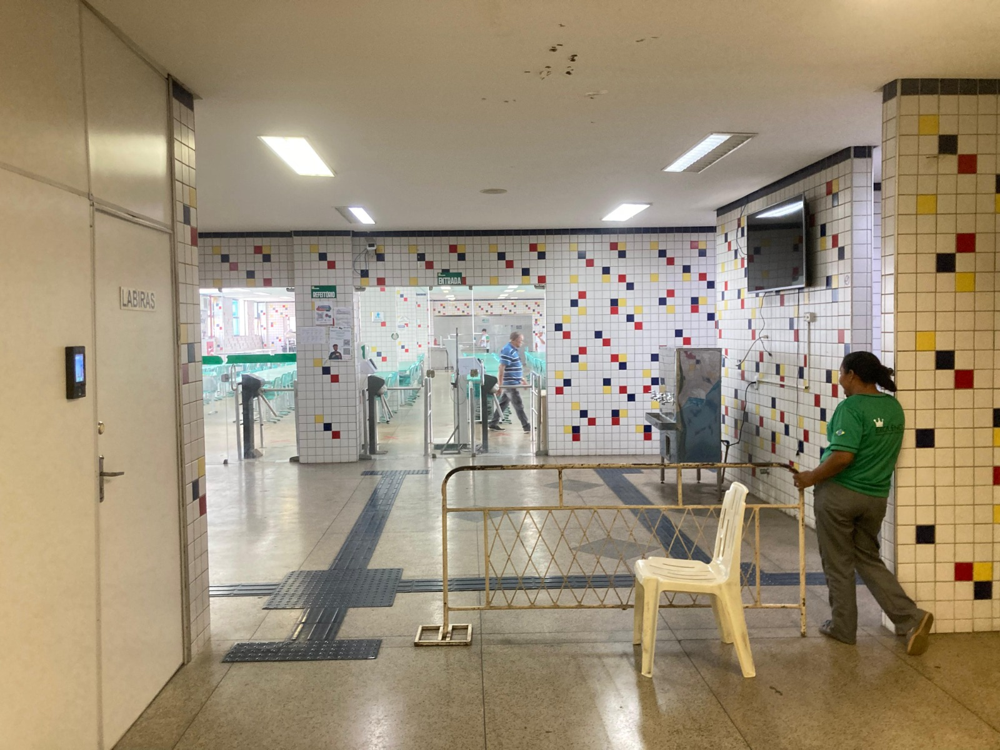

Início
Cardápio da Semana
Carregando cardápio...
O horário de funcionamento do refeitório é das 8h às 12h e das 14h às 17h, de segunda a sexta-feira. Durante esses períodos, os alunos podem usufruir de refeições balanceadas e acessíveis, promovendo uma alimentação saudável e adequada ao ritmo acadêmico.
